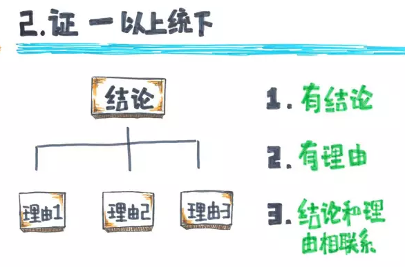

中国书法是一门古老的艺术,它伴随着中华文明的发展而发展。
世界上，拥有书法艺术的民族屈指可数，中国书法，具有悠久的历史。
书法作为一种艺术创作，具有很深的玄妙。 从甲骨文、金文演变而为大篆、小篆、隶书，到东汉、魏、晋时期，草书、楷书、行书、诸体基本定型，书法时刻散发着古老艺术的魅力。为一代又一代人们所喜爱。
书法，是在洁白的纸上，靠毛笔运动的灵活多变和水墨的丰富性，留下斑斑迹相，在纸面上形成有意味的黑白构成，所以，书法是构成艺术；书家的笔是他手指的延伸，笔的疾厉、徐缓、飞动、顿挫，都受主观的驱使，成为他情感、情绪的发泄，所以，书法也是一种表现性的艺术；书法能够通过作品把书家个人的生活感受、学识、修养、个性等悄悄地折射出来，所以，通常有"字如其人"、"书为心画"的说法；书法还可以用于题辞、书写牌匾，因此，也是一种实用性的艺术。
